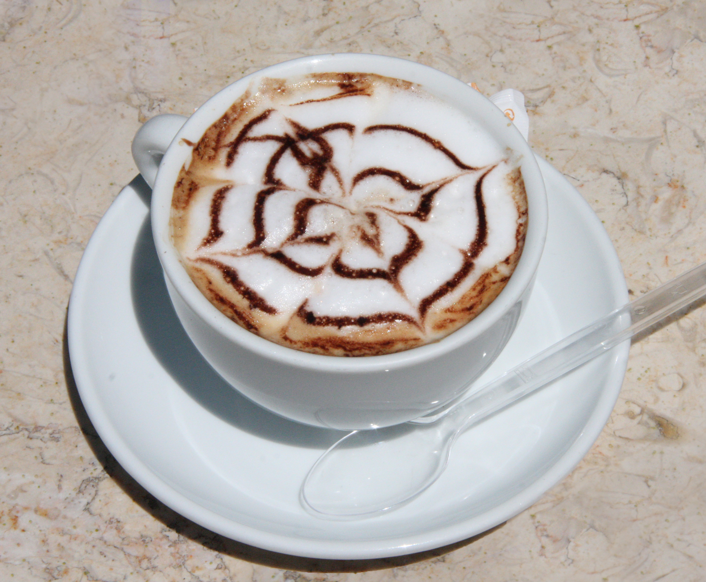
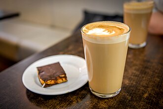
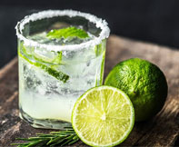
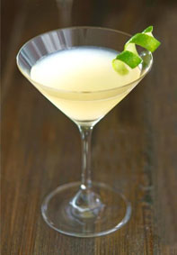
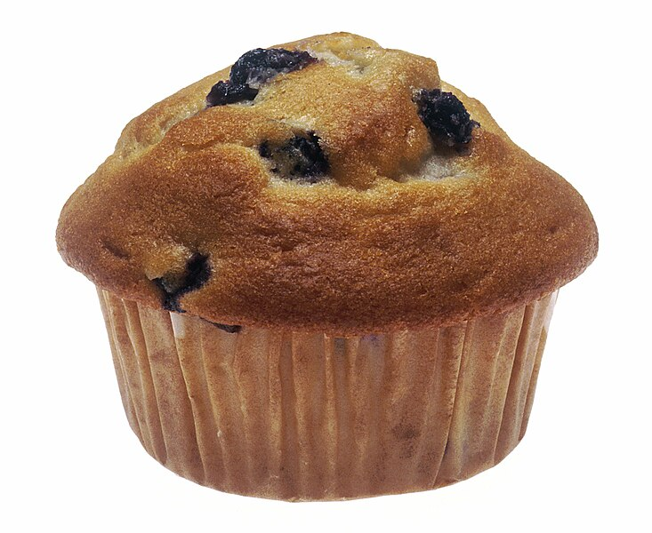
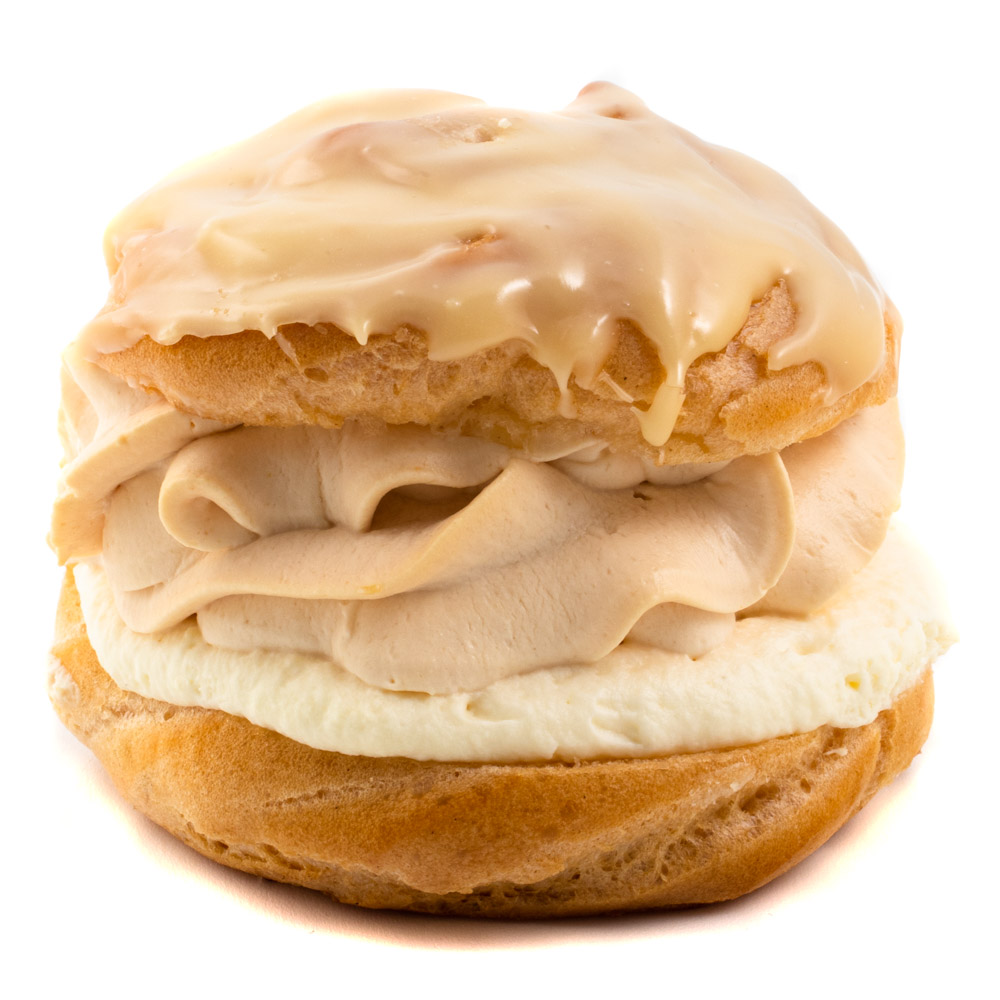

Menu
- Espresso - Klasika

- Cappuccino - Káva s mlékem a s mléčnou pěnou
- Latte - Káva s nahřátým mlékem
- Cuba libre - Rum s kolou a limetkou

- Gin Tonic - Gin s tonicem
- Kamikaze drink - Jméno tohoto drinku z vodky mluví samo za sebe
- Muffiny - Čerstvě udělané každý den
- Různé dortíky - Nabízíme velikou nabídku dortíků
- Zmrzlina - Všichni milují zmrzlinu dokonce i naše vrány!